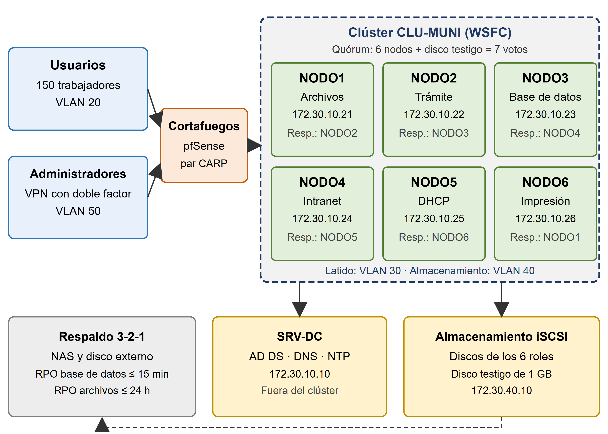
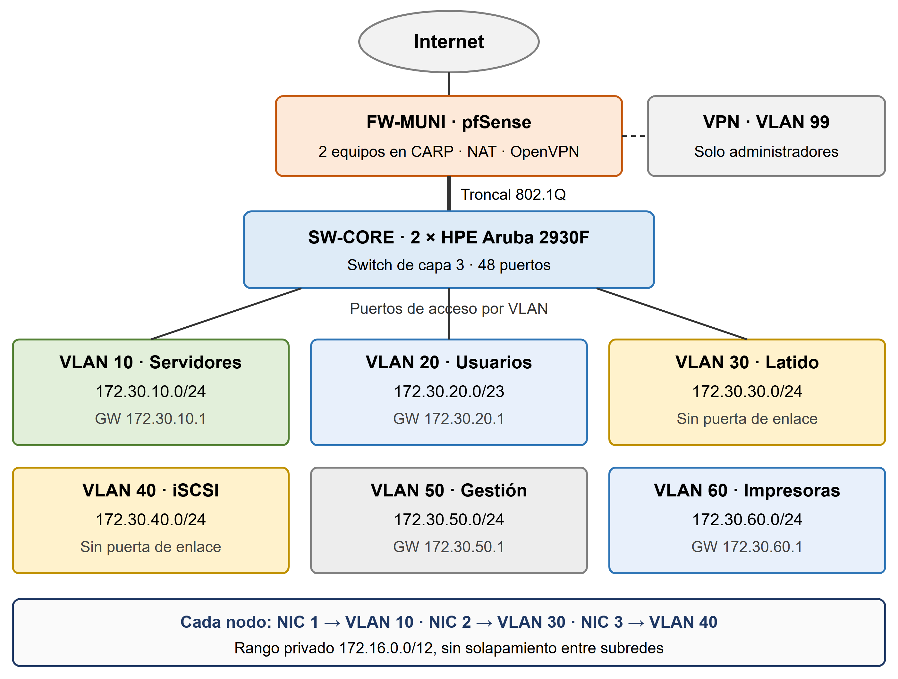
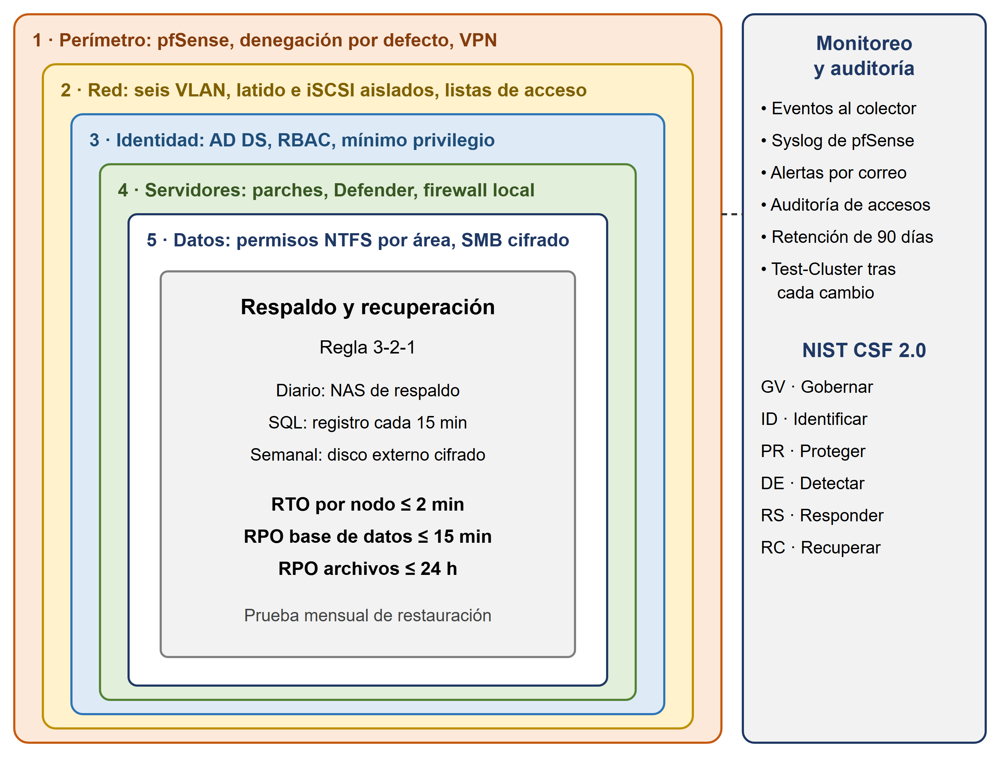
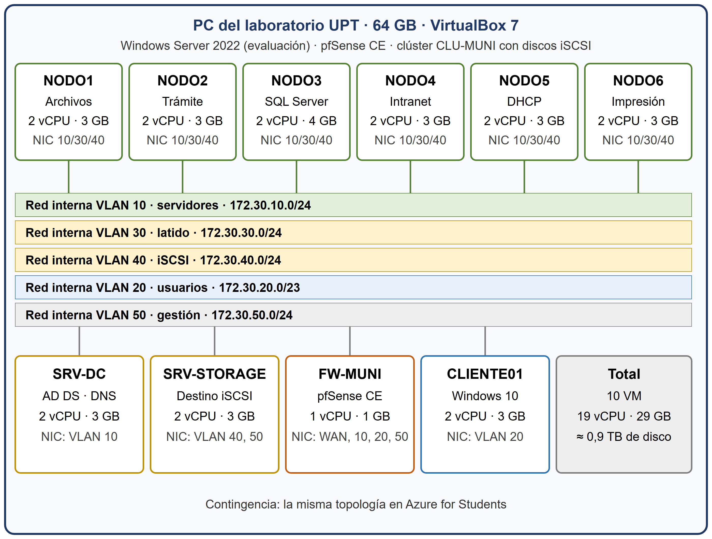

Diseño de la solución tecnológica para que los servicios internos de una municipalidad distrital de Tacna sigan funcionando cuando falla un servidor.
Un único servidor de 2017 con Windows Server 2012 R2, ya sin soporte, aloja todos los servicios de la municipalidad.
Clúster de conmutación por error (WSFC) de seis nodos: cada nodo aloja un servicio y dos nodos quedan como respaldo. Meta: disponibilidad ≥ 99,5 % y recuperación de cada servicio en ≤ 120 s.
\\ARCHIVOS · 172.30.10.21
Respaldo: NODO2 → NODO3IIS · http://tramite · 172.30.10.22
Respaldo: NODO3 → NODO4SQL Server en clúster · 172.30.10.23
Respaldo: NODO4IIS · http://intranet · 172.30.10.24
Respaldo: NODO5 → NODO6Ámbitos VLAN 20 y 60 · 172.30.10.25
Respaldo: NODO6 → NODO1\\IMPRESION · 172.30.10.26
Respaldo: NODO1 → NODO2Servidores de apoyo: SRV-DC (Active Directory, DNS) y SRV-STORAGE (discos iSCSI compartidos y disco testigo). Quórum de 7 votos: el clúster sigue en servicio aunque fallen hasta tres nodos. Validación en VirtualBox en el laboratorio de la UPT.
Los cuatro diagramas obligatorios del diseño.




Bloque privado 172.16.0.0/12, sin solapamiento entre subredes.
| VLAN | Nombre | Subred | Uso |
|---|---|---|---|
| 10 | Servidores | 172.30.10.0/24 | Nodos, clúster, roles y SRV-DC |
| 20 | Usuarios | 172.30.20.0/23 | 150 equipos por DHCP |
| 30 | Heartbeat | 172.30.30.0/24 | Latido entre nodos |
| 40 | iSCSI | 172.30.40.0/24 | Discos compartidos |
| 50 | Gestión | 172.30.50.0/24 | Administración |
| 60 | Impresoras | 172.30.60.0/24 | Impresoras de red |
| 99 | VPN | 172.30.99.0/24 | Administradores remotos con MFA |
Documento técnico y presentación de la II Unidad.
Docente: Ing. Renzo Taco Coayla